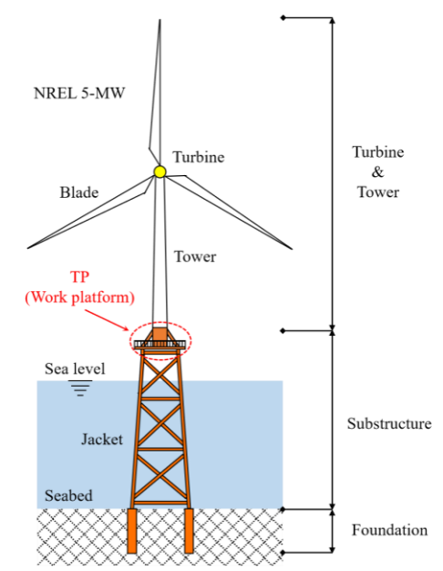
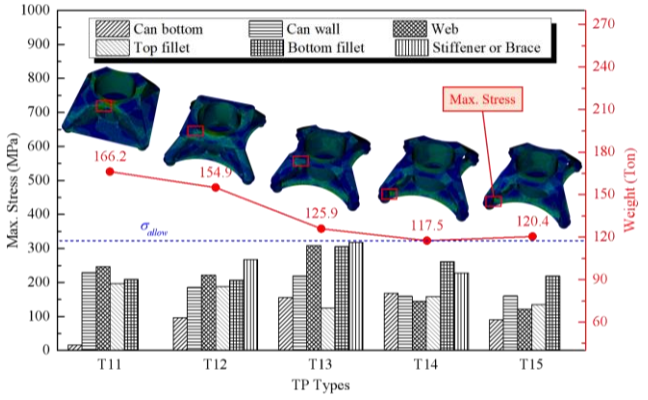
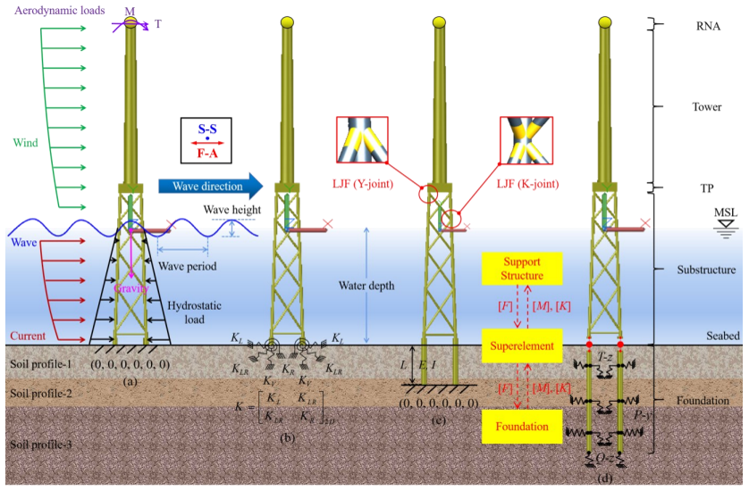
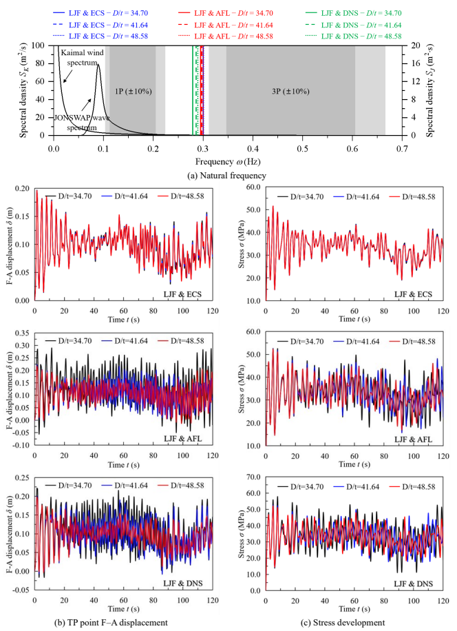

Where Does the Flexibility of a Jacket-Supported Offshore Wind Turbine Really Come From?
Why transition pieces, tubular joints, and foundations matter as much as the jacket members
A jacket-supported offshore wind turbine looks familiar to a structural engineer.
There is a tower.
Below it is a three-dimensional steel frame composed of tubular legs and braces.
Below that are piles embedded in the seabed.
It is tempting to idealize the whole system as
\[ \text{tower} \rightarrow \text{frame members} \rightarrow \text{fixed support}. \]
Then structural stiffness appears to be determined mainly by familiar member properties such as
\[ EA \qquad\text{and}\qquad EI. \]
But a real jacket-supported offshore wind turbine is more complicated.
The tower load must first be redistributed through a transition piece. The tubular braces connect to chord walls that deform locally. Finally, the piles themselves deform together with the surrounding soil.
A more realistic structural chain is therefore
\[ \boxed{ \text{Tower} \rightarrow \text{Transition piece} \rightarrow \text{Tubular joints} \rightarrow \text{Jacket members} \rightarrow \text{Piles} \rightarrow \text{Soil} } \]
Every part of this chain contributes to the response.
This leads to a useful engineering question:
Where does the flexibility of a jacket-supported offshore wind turbine really come from?
Two of our studies approached this question from different scales.
The first investigated how the transition piece transfers loads from the tower into the jacket.
The second examined how local joint flexibility and pile-soil interaction change the dynamic response of the entire offshore wind turbine. :contentReferenceoaicite:0
Together, they reveal a broader structural principle:
The members are not the whole structure. The interfaces are part of the stiffness too.
Start with the load path
Before discussing stiffness, consider what the structure actually has to do.
Wind acting on the rotor and tower produces forces and large overturning moments.
Those actions must travel downward:
\[ \text{Rotor} \rightarrow \text{Tower} \rightarrow \text{Transition piece} \rightarrow \text{Jacket} \rightarrow \text{Foundation} \rightarrow \text{Ground}. \]
The tower and jacket, however, have very different geometries.
The tower is essentially a single large tubular shell.
The jacket consists of spatially separated legs connected by braces.
The transition piece therefore has to transform the forces and moments carried by one structural system into forces that can be carried by another.
This is the first important interface.

The transition piece is a load-distribution structure
Unlike a monopile-supported turbine, a jacket-supported offshore wind turbine requires a special structural region between the tower and jacket.
The tower load must be redistributed through this transition piece because of the large geometric difference between the tower and the jacket.
Our transition-piece study therefore treated the ability of the transition piece to redistribute and transfer forces from the tower as a central determinant of structural performance.
Several transition-piece concepts were investigated numerically, including brace-type, box-girder-type, composite-plate-type, and single-web-type configurations.
But the most interesting lesson was not which configuration ranked first.
It was what the stress distributions revealed about load transfer.
High stress can reveal a poor load path
Consider a conventional brace-type transition piece.
In the basic configuration, the maximum stress reached approximately
\[ 329~\text{MPa}. \]
More revealing than the magnitude was its location.
The maximum stress occurred in the tower can wall, rather than in the brace or deck.
This indicated that the brace was not effectively redistributing and transmitting the tower load downward into the jacket.
The tower can was still carrying too much of the action.
A reinforcing ring was then added near the brace-can connection.
The maximum can-wall stress fell from approximately
\[ 329~\text{MPa} \]
to
\[ 187~\text{MPa}. \]
But a new stress concentration appeared around the brace-can-reinforcing-ring connection.
Why?
Because the reinforcement had changed the load path.
Part of the load previously carried primarily through the tower can was now being transferred into the brace.
This is an important way to interpret finite-element stress contours:
A stress concentration is often telling us where the load is being forced to change direction or transfer between components.

The study subsequently modified the brace and its connection geometry to improve downward load transfer.
In one configuration, the maximum brace and deck stresses decreased by approximately 19.6% and 18.4%, respectively.
But making the tubular brace still larger did not continue this improvement.
The larger configuration produced higher brace stress and greater structural weight.
So,
\[ \boxed{ \text{more material} \not\Rightarrow \text{better load transfer}. } \]
The geometry of the load path matters.
But load transfer is only the beginning
Suppose we have designed an efficient transition piece.
We could now construct a global frame model of the jacket using beam elements.
At first glance, the structural problem appears straightforward.
Each member contributes familiar axial and bending stiffness:
\[ EA \qquad\text{and}\qquad EI. \]
But this contains a hidden assumption.
What happens where one tubular member meets another?
In a conventional frame model, the brace and chord are often connected by an ideal rigid joint.
The member axes meet, and compatibility is enforced at the connection.
The mathematical joint has no deformation of its own.
The real tubular joint does.
A tubular joint is not a mathematical point
Consider a brace welded to a larger tubular chord.
When the brace transmits force and moment into the chord, the chord wall deforms locally.
The connection therefore has its own compliance.
If the undeformed angle between members is \(\theta_0\), an ideal rigid-joint model essentially preserves that joint geometry:
\[ \theta_R=\theta_0. \]
A real flexible tubular joint can deform so that
\[ \theta_F\neq\theta_0. \]
This deformation is called local joint flexibility (LJF).
The 2024 study considered three ways of representing the brace-chord connection:
- rigid joint,
- center-to-center (CTC) joint,
- local joint flexibility (LJF) model. :contentReferenceoaicite:1

The rigid model suppresses local chord deformation.
The CTC model extends the brace axis to the chord centerline but still cannot accurately represent the detailed flexible response of the tubular joint.
The LJF model introduces the local compliance associated with the actual chord-brace connection. :contentReferenceoaicite:2
This seems like a local modeling detail.
But its influence is global.
Local flexibility changes the whole turbine
For a vibrating structure, the natural frequencies follow the familiar eigenvalue problem
\[ \left( \mathbf{K} - \omega^2\mathbf{M} \right)\boldsymbol{\phi} = \mathbf{0}. \]
The important quantity here is not simply the stiffness of each individual member.
It is the stiffness matrix of the entire assembled system:
\[ \mathbf{K}_{\mathrm{system}}. \]
If local joint deformation is suppressed, the assembled structure becomes artificially stiff.
That changes
\[ \mathbf{K}_{\mathrm{system}}, \]
which changes
\[ \omega, \]
and therefore changes the predicted natural frequency
\[ f=\frac{\omega}{2\pi}. \]
The 2024 study showed exactly this behavior.
The rigid-joint model produced a first natural frequency of
\[ 0.324~\text{Hz}, \]
while the LJF model gave
\[ 0.301~\text{Hz}. \]
Compared with the LJF model, the rigid and CTC models predicted maximum transition-piece fore-aft displacements that were respectively 19.79% and 16.38% lower.
At the same time, their predicted maximum member stresses were 54.12% and 32.08% higher than those obtained using the LJF model. :contentReferenceoaicite:3
So neglecting local joint deformation does not introduce one simple conservative error.
It changes different response quantities in different ways.
A model can be conservative for stress while simultaneously being non-conservative for displacement.
That distinction is important.
Then we reach another interface: the seabed
Even if the tubular joints are modeled correctly, another simplification remains.
Where does the jacket end?
A convenient structural model may place a fixed boundary at the seabed:
\[ u=0, \qquad \theta=0. \]
But a pile does not actually stop at the mudline.
It continues into the soil.
Under lateral loading, the pile bends and the surrounding soil deforms.
The foundation therefore contributes another source of flexibility.
This is pile-soil interaction.
The 2024 study compared four foundation representations:
- fixed foundation (FF),
- equivalent coupled springs (ECS),
- apparent fixity length (AFL),
- distributed nonlinear springs (DNS). :contentReferenceoaicite:4
The DNS model represents soil resistance using nonlinear springs distributed along the pile and was used as the higher-fidelity reference for comparison.
Foundation modeling changes the predicted dynamics
Using the DNS model as reference, the fixed-foundation model predicted a first natural frequency of
\[ 0.304~\text{Hz}, \]
compared with
\[ 0.283~\text{Hz} \]
for DNS.
That is a 7.42% increase.
The equivalent coupled-spring model gave a similar overestimate of 7.07%. :contentReferenceoaicite:5
The difference in displacement was even larger.
The maximum transition-piece fore-aft displacement was
\[ 0.130~\text{m} \]
for the fixed-foundation model and
\[ 0.189~\text{m} \]
for the DNS model.
Thus, the fixed-foundation assumption underestimated the displacement by 31.36% relative to DNS.
The apparent-fixity-length model behaved in the opposite direction for some quantities.
Its maximum displacement and member stress were respectively 12.42% and 10.70% higher than those from the DNS model. :contentReferenceoaicite:6
This is another important lesson.
There is no universal correction such as
“A fixed foundation is always conservative.”
It depends on which response quantity is being examined.
Joint flexibility and foundation flexibility act together
The most revealing comparison comes when both effects are considered simultaneously.
Four models were compared:
| Model | Joint | Foundation |
|---|---|---|
| Rigid & FF | Rigid | Fixed |
| LJF & FF | Flexible | Fixed |
| Rigid & DNS | Rigid | Flexible |
| LJF & DNS | Flexible | Flexible |
The LJF & DNS model represents both local joint flexibility and pile-soil flexibility and was used as the higher-fidelity reference.

The corresponding results were: :contentReferenceoaicite:7
| Model | First natural frequency | Maximum TP displacement | Maximum member stress |
|---|---|---|---|
| Rigid & FF | 0.324 Hz | 0.124 m | 67.341 MPa |
| LJF & FF | 0.301 Hz | 0.155 m | 43.694 MPa |
| Rigid & DNS | 0.317 Hz | 0.147 m | 60.032 MPa |
| LJF & DNS | 0.279 Hz | 0.216 m | 52.848 MPa |
Relative to LJF & DNS, the completely rigidized Rigid & FF model predicted a first natural frequency 16.13% higher and a maximum transition-piece displacement 42.30% lower. :contentReferenceoaicite:8
This is too large to dismiss as a small modeling detail.
The model is describing a substantially different mechanical system.
Why do many small flexibilities matter so much?
The reason becomes clearer if we stop thinking of the jacket as a collection of beam elements and instead think of it as a sequence of deformable structural regions.
Very schematically,
\[ \text{tower} - \text{TP} - \text{joint} - \text{member} - \text{joint} - \text{pile} - \text{soil}. \]
Under a generalized load \(F\), the total displacement can be viewed conceptually as
\[ u_{\mathrm{total}} = u_{\mathrm{TP}} + u_{\mathrm{members}} + u_{\mathrm{joints}} + u_{\mathrm{foundation}}. \]
This is not intended as a literal decomposition for a three-dimensional coupled jacket system.
It is a useful mechanical picture.
If a numerical model assumes
\[ u_{\mathrm{joints}}=0 \]
and
\[ u_{\mathrm{foundation}}=0, \]
the total displacement becomes smaller.
The corresponding effective stiffness,
\[ k_{\mathrm{eff}} \sim \frac{F}{u_{\mathrm{total}}}, \]
becomes larger.
The natural frequency then tends to increase because, schematically,
\[ f \propto \sqrt{\frac{k_{\mathrm{eff}}}{m}}. \]
So the change in natural frequency is not mysterious.
The simplified model has removed real deformation mechanisms from the system.
The critical flexibility may be concentrated at interfaces
This leads to a broader structural observation.
The long tubular members are visually dominant.
But they are not necessarily where the most important modeling uncertainty resides.
Significant deformation mechanisms can be concentrated at
\[ \boxed{ \text{interfaces} } \]
such as
- tower-transition-piece load transfer,
- brace-chord joints,
- pile-soil interaction.
The transition-piece study showed that changing local geometry can substantially alter how load flows from the tower into the jacket.
The later dynamic study showed that allowing local chord deformation and pile-soil deformation changes the stiffness and dynamic response of the entire turbine. :contentReferenceoaicite:9
These results operate at different scales, but they tell the same mechanical story.
Local mechanics can control global dynamics
This is perhaps the most important connection between the two studies.
The transition-piece problem initially appears local:
How should the tower load enter the jacket?
The tubular-joint problem also appears local:
How much does the chord wall deform when a brace transfers load into it?
Pile-soil interaction likewise appears to be a foundation detail:
How does the pile deform against the surrounding soil?
But each local mechanism contributes to global flexibility.
And global flexibility determines dynamic properties such as
\[ f_n, \qquad u(t), \qquad \sigma(t). \]
Thus,
\[ \boxed{ \text{local load transfer} \rightarrow \text{local deformation} \rightarrow \text{global stiffness} \rightarrow \text{global dynamic response} } \]
This is why seemingly small modeling decisions at joints and foundations can alter predictions for the entire offshore wind turbine.
Why this matters especially for offshore wind turbines
For many conventional structures, a moderate error in natural frequency may not dominate design.
Offshore wind turbines are different.
They operate continuously under cyclic aerodynamic and hydrodynamic excitation.
The structural natural frequencies must therefore be considered relative to excitation frequencies associated with rotor rotation and blade passing.
In the 2024 study, the rotor rotational-frequency range was approximately
\[ 0.115\text{--}0.202~\text{Hz}, \]
while the blade-passing range was approximately
\[ 0.345\text{--}0.606~\text{Hz}. \]
The rigid-joint model produced a first natural frequency of
\[ 0.324~\text{Hz}, \]
placing it close to the blade-passing-frequency region considered in the analysis.
Accounting for both LJF and DNS foundation flexibility reduced the corresponding first natural frequency to
\[ 0.279~\text{Hz}. \]
Thus, modeling flexibility can change not only calculated displacement and stress.
It can alter the engineer’s interpretation of the dynamic separation between structural and excitation frequencies. :contentReferenceoaicite:10
Simplification is not the problem
This does not mean that every jacket offshore wind turbine should always be modeled using detailed shell elements, full three-dimensional soil continua, and highly expensive nonlinear simulations.
Engineering analysis necessarily uses idealization.
The real question is:
Which deformation mechanisms can safely be simplified, and which ones control the response we care about?
Frame elements remain extremely useful because they make analysis of large jacket structures computationally efficient.
Simplified foundation models can also be appropriate.
The 2024 study itself examined simplified models precisely because practical engineering requires them. It further found that different simplified models behave differently as soil and pile stiffness change. :contentReferenceoaicite:11
The important point is to understand what each simplification removes.
A rigid joint removes local chord deformation.
A fixed foundation removes pile-soil deformation.
A simplified transition piece may remove the actual mechanism by which tower loads are redistributed into the jacket legs.
If those deformation mechanisms are important to the response quantity being studied, the simplification becomes important too.
Stiffness is a system property
Structural engineers often associate stiffness with a member property:
\[ EA, \qquad EI, \qquad GJ. \]
These quantities are fundamental.
But the offshore jacket example reminds us that global structural stiffness is not obtained from member stiffness alone.
It emerges from the assembled system:
\[ \boxed{ \text{Global stiffness} = \text{members} + \text{connections} + \text{load-transfer regions} + \text{foundation interaction}. } \]
This is a conceptual statement rather than a literal additive stiffness equation.
Its purpose is to emphasize where deformation can occur.
A sophisticated beam model with perfectly rigid joints and perfectly fixed foundations may therefore be less representative than a relatively simple model that captures the dominant flexibility mechanisms correctly.
What should an engineer look for?
When constructing or reviewing a jacket offshore wind turbine model, it is useful to ask:
How does the tower load enter the jacket?
Is the transition-piece geometry providing a rational load path, or is stress being forced through localized regions?
Are the tubular joints really rigid?
If local chord-wall deformation contributes significantly to the response, a rigid beam intersection may overestimate stiffness.
Where is the foundation assumed to be fixed?
Does that boundary condition represent the actual pile-soil system sufficiently well for the response being investigated?
Which response quantity matters?
Natural frequency, displacement, member stress, and fatigue may respond differently to the same modeling simplification.
This last point is particularly important.
A modeling assumption that appears conservative for one quantity can be non-conservative for another.
Limitations
The results discussed here come from two specific numerical studies and should not be interpreted as universal correction factors for all jacket-supported offshore wind turbines.
The transition-piece study used an NREL 5-MW reference turbine and a specific jacket geometry and environmental condition. The structural comparisons were made for the particular transition-piece concepts examined in that study.
The joint- and foundation-flexibility study likewise used a specific 5-MW jacket-supported OWT, soil profile, environmental conditions, joint formulations, and foundation models. It also simplified the turbine-blade-hub system as a lumped mass and represented aerodynamic loading in simplified form. :contentReferenceoaicite:12
Therefore, values such as
\[ 16.13\%, \qquad 42.30\%, \]
should not be applied as general correction factors.
Their importance is conceptual:
Neglected interface flexibility can be large enough to materially change the predicted response of the entire structure.
Engineering takeaway
A jacket offshore wind turbine is easy to draw as a frame.
But mechanically, it is a chain of load-transfer and deformation mechanisms:
\[ \text{Tower} \rightarrow \text{Transition piece} \rightarrow \text{Tubular joints} \rightarrow \text{Jacket members} \rightarrow \text{Piles} \rightarrow \text{Soil}. \]
The members matter.
But so do the places where the members meet, where the load changes its path, and where the structure enters the ground.
That leads to the central engineering principle:
The members are not the whole structure. The interfaces are part of the stiffness too.
And when a numerical model appears unexpectedly stiff, the first question should not always be:
Are the members too large?
It may be more useful to ask:
Which real deformation mechanism did the model remove?
Original research
Ma, C., & Zi, G. (2022). Comparative study on the structural behavior of a transition piece for offshore wind turbine with jacket support. Steel and Composite Structures, 43(3), 363–373. DOI: 10.12989/scs.2022.43.3.363
Ma, C., Saghi, H., Choo, Y.-W., Ju, Y. K., Yoo, C., & Zi, G. (2024). Influence of different foundation models on the dynamic response of jacket offshore wind turbines with local joint flexibility. Steel and Composite Structures, 53(5), 629–651. DOI: 10.12989/scs.2024.53.5.629